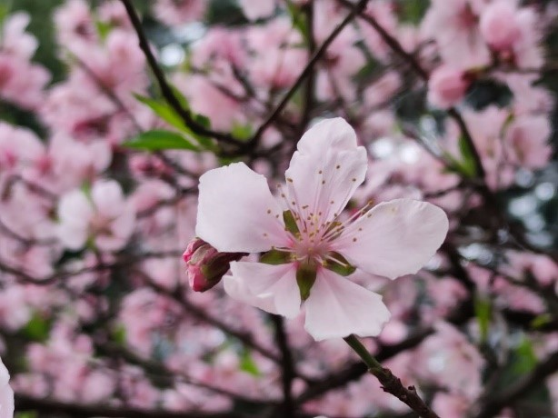

第三版
第三版

踏碎一地薄霜，不期而至的不只有那枝头泛着浅绿、正探头探脑的新芽，更有各处花团锦簇，一派生机盎然。虫燕呢喃，春莺絮语，柔柔的风裹挟着清清浅浅的花香在校园中游走，勾勒出西电的“人间四月”、桃红柳绿。
遇梢头
伴着早晨暖洋洋的日光走在路上，与浓浓春色撞了满怀。地上铺着散落的花瓣，馥郁花香扑入鼻息。两旁的绿树伴着微风轻轻摇晃，夹杂着粉色、白色开得俏生生的花。樱花大道绽开粉色的花海，簌簌风过，抖落一地花胜雪。枝头处处春意闹，在春光中绽放浓情。这春色又在校园的氛围中显得格外安宁，丝毫不显争奇斗艳的流俗，它柔媚清朗、清冽缠绵。
狸奴娇
春日里最让人心生喜爱的，还是那悠着身体眯着眼睛在草地上踱步的小猫，踩着嫩草不紧不慢地晃着，没有一点声响。阳光悠悠地照下来，它便往那一躺，侧着身子懒懒地看着过路的人，时而伸出爪子拿舌头轻轻一舔，招惹着路人向它注目。那一对透亮灵活的大眼睛，格外惹人怜爱。若有人将手伸向它的下巴，它便露出肚皮瘫在地上，发出“呼噜呼噜”的叫声，不时扭一下摊开的身体，向人撒娇。开学短短几月，小猫们已经在同学们的呵护中肉眼可见地发福，拖着浑圆的身体在地上打滚。
人面桃花
穿着汉服的姑娘手执团扇，在簌簌花雨中轻轻旋身，裙摆微扬，扑开馥郁花香；跨着相机的同学穿梭在花与树之间，将一幕幕美好定格；空中零星飘着几只形态各异的风筝，在云间舒展着翅膀，牵风筝的人露出灿烂笑容。常说“春风十里柔情”。春景怡人，春风拂去人心头点点烦闷，又用两朵鲜花、几篇嫩叶填补，使人心旷神怡。忙碌的身影在教学楼、宿舍、食堂之间来来往往，不知何时，鞋底粘上了花瓣和叶子，这又何尝不是春的讯号？只要你抬起头，春总是在的。
此间光景莫负，须知一枝春难得。西电的春天散发着独特的魅力，引人不断驻足流连，总是心驰神往。这春色在清风疏雨，在和煦晨光，在一花一草一人一景。陶醉在点点春色里，听一段春日絮语。